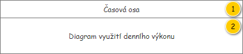
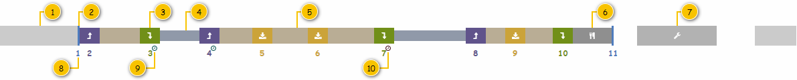

Stručný popis
Diagram slouží k podrobnému zobrazení časového využití Denního výkonu, kdy je zobrazen právě jeden Denní výkon.
Poznámka: V případě, kdy není obsažen ani jedna Položka denního výkonu (mimo Start a Cíl), není diagram zobrazen – není totiž k dispozici trasa Denního výkonu.
Uživatelské rozhraní
Rozložení
Drátový diagram

Přehled UI komponent
| Callout | Skupina |
|---|---|
| 1 | Časová osa |
| 2 | Diagram využití denního výkonu |
Časová osa
Časová osa vychází z obecného popisu – viz 700UI08: Časová osa.
Poznámka: Nastavení zobrazeného detailu časové osy se přebírá z UC, který vyvolal zobrazení okna pro editaci Denního výkonu, pokud je tedy taková informace v UC k dispozici.
Diagram využití denního výkonu
Nejdříve je uveden rychlý přehled obsahující prvky, které se vyskytují v rámci diagramu. Následně je popsán algoritmus, podle kterého je diagram vykreslován. Nakonec jsou doplněny různé detailní náhledy jednotlivých prvků diagramu a situací, které mohou nastat.
Drátový diagram

Přehled UI komponent
| Callout | Popis |
|---|---|
| 1 | Intervaly omezení denního výkonu typu Mimo provozní dobu – naznačují, která část Denního výkonu se vyskytuje mimo provozní dobu. |
| 2 | Lokace objednané služby bez doby manipulace. |
| 3 | Lokace objednané služby obsahující dobu manipulace. |
| 4 | Doba jízdy mezí navazujícími Položkami denního výkonu. |
| 5 | Doba jízdy mezí navazujícími Lokacemi objednané služby v rámci jedné Položky denního výkonu. |
| 6 | Položka denního výkonu představující přestávku. |
| 7 | Intervaly omezení denního výkonu typu Alokace na servis – naznačují, která část Denního výkonu je vyhrazena pro servisní úkony. |
| 8 | Pořadí Lokace objednané služby v rámci Denního výkonu. |
| 9 | Indikace, že je realizace v místě Lokace objednané služby omezena časovým oknem, které je splněno. |
| 10 | Indikace, že je realizace v místě Lokace objednané služby omezena časovým oknem, které není splněno. |
Interakce
Jediná interakce, která je v diagramu povolena, je posunutí začátku provozní doby Denního výkonu (atribut Začátek provozní doby).
Uživatel chytne datový bod představující první Lokaci objednané služby (atribut Lokace objednané služby entity Položka denního výkonu – atribut Počáteční položka denního výkonu entity Denní výkonu).
Systém následně vyhodnotí nastavenou délku pracovní doby. Načte nejprve všechny Intervaly omezení denního výkonu typu Mimo provozní dobu, ty jsou právě dva a jsou v následujícím formátu:
- 0:00-Čas do,
- Čas od-23:59.
Systém tedy odečte zvýrazněné hodnoty a získá délku provozní doby: Čas od - Čas do. Získaný čas nám pak udává, jak „daleko“ je možné posunout chycenou Lokaci objednané služby, rozmezí je tedy následující:
- 0:00
- 23:59 - délka provozní doby.
Jakmile uživatel vybere požadovanou pozici a umístí chycenou Lokaci objednané služby, Systém provede potřebné změny – spustí 200UC33: Upravit provozní dobu denního výkonu, na vstup UC jsou předány následující hodnoty:
- Denní výkon: právě editovaný Denní výkon.
- Intervaly omezení denního výkonu:
- První – Typ omezení: Mimo pracovní dobu, Čas od: 0:00, Čas do: pozice, kam uživatel umístil Lokaci objednané služby.
- Druhý – Typ omezení: Mimo pracovní dobu, Čas od: pozice, kam uživatel umístil Lokaci objednané služby + délka provozní doby, Čas do: 23:59.
Chování
Vykreslení Diagramu
Vykreslení diagramu je složeno ze dvou nezávislých kroků, které ale musí být provedeny v uvedeném pořadí.
- Systém vykreslí Intervaly omezení denního výkonu – viz Vykreslení intervalů omezení.
- Systém vykreslí Položky denního výkonu – viz Vykreslení položek denního výkonu.
Časová osa diagramu je pak pevně dána – jedná se o interval omezený krajními hodnotami 0:00 a 23:59, tedy o jeden den. Pokud nastane případ, kdy se některé z naplánovaných Položek denního výkonu dostanou mimo tento interval, nejsou vykresleny – viz obrázek.

Barvy a ikony jsou společné pro celou obrazovku Denního výkonu, proto jsou uvedeny společně na jednom místě – viz Použité barvy a ikony. Pokud je v dalším textu odkazováno na barvy či ikony, jedná se o hesla obsažená v tomto přehledu.
Jednotlivé datové body jsou pak vykresleny různou „výškou čáry“, použity jsou pak 3 základní úrovně – viz tabulka.
| Úroveň | Výška datového bodu | Použití |
|---|---|---|
| 1 | 100 % | |
| 2 | 80 % |
|
| 3 | 60 % |
|
Kromě výšky čáry je potřeba rozlišit i vrstvy, ve které budou jednotlivé datové body vykresleny. Tím je definován způsob, které datové body mohou být „překryty“ a které ne. Použity jsou pak 3 základní úrovně, kdy první je vykreslena navrchu a poslední vespod – viz tabulka.
| Úroveň | Použití |
|---|---|
| 1 |
|
| 2 |
|
| 3 |
Vykreslení intervalů omezení
Systém nejprve vykreslí Intervaly omezení denního výkonu, ty jsou zobrazeny pouze jako pomůcka pro uživatele. Pokud tedy nastane situace, kdy jsou tyto Intervaly omezení denního výkonu v kolizi s Položkami denního výkonu, jsou těmito Položkami denního výkonu překryty – viz obrázek.
- Pro všechny Intervaly omezení denního výkonu typu Mimo provozní dobu (atribut Intervaly omezení entity Denní výkon).
- Systém vykreslí Interval omezení denního výkonu.
- Začátek: atribut Čas omezení od.
- Konec: atribut Čas omezení do.
- Výška: úroveň 1.
- Vrstva: úroveň 3.
- Barva: Interval omezení/Mimo provozní dobu.
- Systém vykreslí Interval omezení denního výkonu.
- Pro všechny Intervaly omezení denního výkonu typu Alokace na servis (atribut Intervaly omezení entity Denní výkon).
- Systém vykreslí Interval omezení denního výkonu.
- Začátek: atribut Čas omezení od.
- Konec: atribut Čas omezení do.
- Výška: úroveň 1.
- Vrstva: úroveň 3.
- Barva: Interval omezení/Alokace na servis.
- Systém vykreslí ikonu uprostřed datového bodu: Interval omezení/Alokace na servis.
- Systém vykreslí Interval omezení denního výkonu.
Poznámka: Na pořadí, ve kterém jsou jednotlivé Intervaly omezení denního výkonu v rámci jednotlivých kroků vykresleny, nezáleží.
Vykreslení položek denního výkonu
Nyní můžeme přistoupit k vykreslení Položek denního výkonu.
Pomocné proměnné
- AktuálníČas: Celé kladné číslo – počet minut od začátku Denního výkonu.
Tok událostí
- Systém nastaví AktuálníČas do výchozího stavu: atribut Začátek provozní doby entity Denní výkon (poznámka: nutné převést na počet minut od začátku dne).
- Systém vykreslí Položku denního výkonu představující Start – viz Vykreslení položky denního výkonu typu Lokace objednané služby, na vstup jsou předány následující hodnoty:
- Položka denního výkonu: atribut Počáteční položka denního výkonu entity Denní výkon.
- Položka denního výkonu: atribut Počáteční položka denního výkonu entity Denní výkon.
- Pro všechny Položky denního výkonu (atribut Položky denního výkonu entity Denní výkon).
- Systém vykreslí Položku denního výkonu dle jejího typu (atribut Typ položky entity Položka denního výkonu):
- Objednaná služba – viz Vykreslení položky denního výkonu typu Objednaná služba, na vstup jsou předány následující hodnoty:
- Položka denního výkonu: právě zkoumaná Položka denního výkonu.
- Lokace objednané služby – viz Vykreslení položky denního výkonu typu Lokace objednané služby, na vstup jsou předány následující hodnoty:
- Položka denního výkonu: právě zkoumaná Položka denního výkonu.
- Položka denního výkonu: právě zkoumaná Položka denního výkonu.
- Časový interval – viz Vykreslení položky denního výkonu typu Časový interval, na vstup jsou předány následující hodnoty:
- Položka denního výkonu: právě zkoumaná Položka denního výkonu.
- Rozdělení – viz Vykreslení položky denního výkonu typu Rozdělení, na vstup jsou předány následující hodnoty:
- Položka denního výkonu: právě zkoumaná Položka denního výkonu.
- Objednaná služba – viz Vykreslení položky denního výkonu typu Objednaná služba, na vstup jsou předány následující hodnoty:
- Systém vykreslí Položku denního výkonu dle jejího typu (atribut Typ položky entity Položka denního výkonu):
- Systém vykreslí Položku denního výkonu představující Cíl – viz Vykreslení položky denního výkonu typu Lokace objednané služby, na vstup jsou předány následující hodnoty:
- Položka denního výkonu: atribut Koncová položka denního výkonu entity Denní výkon.
Poznámka: Na pořadí, ve kterém jsou jednotlivé Položku denního výkonu vykresleny, záleží. Musí Být dodrženo pořadí jednotlivých Položek denního výkonu (atribut Pořadí) v rámci Denního výkonu.
Vykreslení položky denního výkonu
Vykreslení Položky denního výkonu je dáno především jejím typem, případně pak specifiky dle konkrétního typu Položky denního výkonu.
Vykreslení položky denního výkonu typu Objednaná služba
Jedná se o vykreslení Položky denního výkonu, která vznikla po vložení Objednané služby do Denního výkonu.
Na vstupu jsou předána následující data:
- Entita Položka denního výkonu.
Postup vykreslení Položky denního výkonu je následující.
- Pokud je v Položce denního výkonu k dispozici Lokace objednané služby (poznámka: jedná se o Položku denního výkonu, jejíž doba realizace je definována uživatelem).
- Systém vykreslí Lokaci objednané služby obsaženou v Položce denního výkonu – viz Vykreslení lokace objednané služby typu Časový interval, na vstup jsou předány následující hodnoty:
- Lokace objednané služby: atribut Lokace Objednané služby entity Položka denního výkonu, která byla předána na vstupu.
- Je objednaná služba: TRUE.
- Systém vykreslí dobu jízdy do další lokace – viz Vykreslení doby jízdy do další lokace mezi položkami, na vstup jsou předány následující hodnoty:
- Doba jízdy: atribut Doba jízdy do další lokace entity Lokace objednané služby – atribut Lokace Objednané služby entity Položka denního výkonu, která byla předána na vstupu.
- Doba jízdy: atribut Doba jízdy do další lokace entity Lokace objednané služby – atribut Lokace Objednané služby entity Položka denního výkonu, která byla předána na vstupu.
- Konec toku událostí.
- Systém vykreslí Lokaci objednané služby obsaženou v Položce denního výkonu – viz Vykreslení lokace objednané služby typu Časový interval, na vstup jsou předány následující hodnoty:
- Pro všechny Lokace objednané služby (atribut Lokace objednané služby entity Objednaná služby – atribut Objednaná služba entity Položka denního výkonu).
- Pokud Lokace objednané služby nemá být provedena: Provést == FALSE (atribut Provést entity Lokace objednané služby, která je právě zkoumána).
- Skok na krok 2 toku událostí.
- Systém vykreslí Lokaci objednané služby dle jejího typu (atribut Typ lokace entity Lokace objednané služby):
- Místo realizace: viz Vykreslení běžné lokace objednané služby, na vstup jsou předány následující hodnoty:
- Lokace objednané služby: Lokace objednané služby, která je právě zkoumána.
- Lokace objednané služby: Lokace objednané služby, která je právě zkoumána.
- Likvidační místo, Výchozí likvidační místo: viz Vykreslení běžné lokace objednané služby, na vstup jsou předány následující hodnoty:
- Lokace objednané služby: Lokace objednané služby, která je právě zkoumána.
- Lokace objednané služby: Lokace objednané služby, která je právě zkoumána.
- Provozovna: viz Vykreslení běžné lokace objednané služby, na vstup jsou předány následující hodnoty:
- Lokace objednané služby: Lokace objednané služby, která je právě zkoumána.
- Lokace objednané služby: Lokace objednané služby, která je právě zkoumána.
- Jiné: viz Vykreslení lokace objednané služby typu Jiné, na vstup jsou předány následující hodnoty:
- Lokace objednané služby: Lokace objednané služby, která je právě zkoumána.
- Je rozdělení směny: FALSE.
- Časový interval: viz Vykreslení lokace objednané služby typu Časový interval, na vstup jsou předány následující hodnoty:
- Lokace objednané služby: Lokace objednané služby, která je právě zkoumána.
- Je objednaná služba: FALSE.
- Místo dočasného uložení: viz Vykreslení běžné lokace objednané služby, na vstup jsou předány následující hodnoty:
- Lokace objednané služby: Lokace objednané služby, která je právě zkoumána.
- Lokace objednané služby: Lokace objednané služby, která je právě zkoumána.
- Místo realizace: viz Vykreslení běžné lokace objednané služby, na vstup jsou předány následující hodnoty:
- Systém vykreslí dobu jízdy do další Lokace objednané služby dle pořadí právě zkoumané Lokace objednané služby v rámci Objednaná služby:
- Poslední Lokace objednané služby: viz Vykreslení doby jízdy do další lokace mezi položkami, na vstup jsou předány následující hodnoty:
- Doba jízdy: atribut Doba jízdy do další lokace entity Lokace objednané služby, která je právě zkoumána.
- Doba jízdy: atribut Doba jízdy do další lokace entity Lokace objednané služby, která je právě zkoumána.
- Jinak: viz Vykreslení doby jízdy do další lokace v rámci položky, na vstup jsou předány následující hodnoty:
- Doba jízdy: atribut Doba jízdy do další lokace entity Lokace objednané služby, která je právě zkoumána.
- Doba jízdy: atribut Doba jízdy do další lokace entity Lokace objednané služby, která je právě zkoumána.
- Poslední Lokace objednané služby: viz Vykreslení doby jízdy do další lokace mezi položkami, na vstup jsou předány následující hodnoty:
- Pokud Lokace objednané služby nemá být provedena: Provést == FALSE (atribut Provést entity Lokace objednané služby, která je právě zkoumána).
Poznámka: Na pořadí, ve kterém jsou jednotlivé Lokace objednané služby vykresleny, záleží. Musí Být dodrženo pořadí jednotlivých Lokací objednané služby (atribut Pořadí) v rámci Objednané služby.
Vykreslení položky denního výkonu typu Lokace objednané služby
Jedná se o vykreslení Položky denního výkonu, která vznikla po vložení Lokace objednané služby, typicky Provozovny, Likvidačního místa či Bodu průjezdu.
Na vstupu jsou předána následující data:
- Entita Položka denního výkonu.
Postup vykreslení Položky denního výkonu je následující.
- Pokud Lokace objednané služby obsažená v Položce denního výkonu nemá být provedena: Provést == FALSE (atribut Provést entity Lokace objednané služby – atribut Lokace Objednané služby entity Položka denního výkonu, která byla předána na vstupu).
- Konec toku událostí.
- Systém vykreslí Lokaci objednané služby obsaženou v Položce denního výkonu dle jejího typu (atribut Typ lokace entity Lokace objednané služby):
- Místo realizace: nemůže nastat.
- Likvidační místo: viz Vykreslení běžné lokace objednané služby, na vstup jsou předány následující hodnoty:
- Lokace objednané služby: atribut Lokace Objednané služby entity Položka denního výkonu, která byla předána na vstupu.
- Lokace objednané služby: atribut Lokace Objednané služby entity Položka denního výkonu, která byla předána na vstupu.
- Výchozí likvidační místo: nemůže nastat.
- Provozovna: viz Vykreslení běžné lokace objednané služby, na vstup jsou předány následující hodnoty:
- Lokace objednané služby: atribut Lokace Objednané služby entity Položka denního výkonu, která byla předána na vstupu.
- Lokace objednané služby: atribut Lokace Objednané služby entity Položka denního výkonu, která byla předána na vstupu.
- Jiné: viz Vykreslení lokace objednané služby typu Jiné, na vstup jsou předány následující hodnoty:
- Lokace objednané služby: atribut Lokace Objednané služby entity Položka denního výkonu, která byla předána na vstupu.
- Je rozdělení směny: FALSE.
- Časový interval: nemůže nastat.
- Místo dočasného uložení: nemůže nastat.
- Systém vykreslí dobu jízdy do další lokace – viz Vykreslení doby jízdy do další lokace mezi položkami, na vstup jsou předány následující hodnoty:
- Doba jízdy: atribut Doba jízdy do další lokace entity Lokace objednané služby – atribut Lokace Objednané služby entity Položka denního výkonu, která byla předána na vstupu.
Vykreslení položky denního výkonu typu Časový interval
Jedná se o vykreslení Položky denního výkonu, která vznikla po vložení přestávky.
Na vstupu jsou předána následující data:
- Entita Položka denního výkonu.
Postup vykreslení Položky denního výkonu je následující.
- Systém vykreslí Lokaci objednané služby obsaženou v Položce denního výkonu – viz Vykreslení lokace objednané služby typu Časový interval, na vstup jsou předány následující hodnoty:
- Lokace objednané služby: atribut Lokace Objednané služby entity Položka denního výkonu, která byla předána na vstupu.
- Je objednaná služba: FALSE.
- Systém vykreslí dobu jízdy do další lokace – viz Vykreslení doby jízdy do další lokace mezi položkami, na vstup jsou předány následující hodnoty:
- Doba jízdy: atribut Doba jízdy do další lokace entity Lokace objednané služby – atribut Lokace Objednané služby entity Položka denního výkonu, která byla předána na vstupu.
Vykreslení položky denního výkonu typu Rozdělení
Jedná se o vykreslení Položky denního výkonu, která vznikla po vložení rozdělení směny.
Na vstupu jsou předána následující data:
- Entita Položka denního výkonu.
Postup vykreslení Položky denního výkonu je následující.
- Systém vykreslí Lokaci objednané služby obsaženou v Položce denního výkonu – viz Vykreslení lokace objednané služby typu Jiné, na vstup jsou předány následující hodnoty:
- Lokace objednané služby: atribut Lokace Objednané služby entity Položka denního výkonu, která byla předána na vstupu.
- Je rozdělení směny: TRUE.
- Systém vykreslí dobu jízdy do další lokace – viz Vykreslení doby jízdy do další lokace mezi položkami, na vstup jsou předány následující hodnoty:
- Doba jízdy: atribut Doba jízdy do další lokace entity Lokace objednané služby – atribut Lokace Objednané služby entity Položka denního výkonu, která byla předána na vstupu.
Vykreslení lokace objednané služby
Vykreslení Lokace objednané služby se odvíjí nejen od jejího typu, ale i dle konkrétního použití.
Vykreslení běžné lokace objednané služby
Jedná se o vykreslení Lokace objednané služby typu Místo realizace, Likvidační místo, Výchozí likvidační místo či Provozovna. Obecně se jedná o Lokace objednané služby, která mají nenulovou dobu manipulace.
Na vstupu jsou předána následující data:
- Entita Lokace objednané služby.
Postup vykreslení Lokace objednané služby je následující.
- Systém vykreslí Lokaci objednané služby.
- Začátek: AktuálníČas.
- Konec: AktuálníČas + Doba manipulace (atribut Doba manipulace entity Lokace objednané služby, která byla předána na vstupu).
- Výška: úroveň 2.
- Vrstva: úroveň 2.
- Barva: liší se dle Akce prováděné v Lokaci objednané služby (atribut Akce):
- Vyzvednout: Akce v lokaci/Vyzvednout.
- Umístit: Akce v lokaci/Umístit.
- Vyprázdnit: Akce v lokaci/Vyprázdnit.
- Navštívit: nemůže nastat.
- Systém vykreslí ikonu uprostřed datového bodu dle Akce prováděné v Lokaci objednané služby (atribut Akce):
- Vyzvednout: Akce v lokaci/Vyzvednout.
- Umístit: Akce v lokaci/Umístit.
- Vyprázdnit: Akce v lokaci/Vyprázdnit.
- Navštívit: nemůže nastat. TODO: Může – vložení položky typu Lokace objednané služby, a to pro Provozovnu.
- Systém vykreslí pořadové číslo Lokace objednané služby v rámci Denního výkonu.
- Systém vykreslí pořadové číslo uprostřed pod datovým bodem: Pořadí (atribut Pořadí entity Lokace objednané služby).
- Vrstva: úroveň 1.
- Barva: viz krok 1.
- Pokud má Lokace objednané služby přiřazeno časové okno: Začátek časového okna je různý od 0:00 nebo Konec časového okna je různý od 23:59 (atributy Začátek časového okna a Konec časového okna entity Lokace objednané služby).
- Systém vykreslí ikonu indikující přítomnost časového okna jako pravý horní index pořadí:
- Barva a ikona: liší se dle toho, zda je splněno časové okno (atribut Splněno časové okno entity Lokace objednané služby):
- Barva a ikona: liší se dle toho, zda je splněno časové okno (atribut Splněno časové okno entity Lokace objednané služby):
- Systém vykreslí ikonu indikující přítomnost časového okna jako pravý horní index pořadí:
- Systém vykreslí pořadové číslo uprostřed pod datovým bodem: Pořadí (atribut Pořadí entity Lokace objednané služby).
- Systém aktualizuje aktuální čas: AktuálníČas += Doba manipulace (atribut Doba manipulace entity Lokace objednané služby, která byla předána na vstupu).
Vykreslení lokace objednané služby typu Jiné
Jedná se o vykreslení Lokace objednané služby typu Jiné. Obecně se jedná o Lokace objednané služby, která mají nulovou dobu manipulace. Tím je dán i způsob vykreslení v diagramu:
- Lokace objednané služby díky nulové Době manipulace i Době trvání nemá vliv na posun aktuálního času – i přesto musí být datový bod vykreslen o určité délce (při nulové délce by nebyl viditelný pro uživatele).
- Lokace objednané služby je proto vykreslena v horní vrstvě, a nezkresluje tak informace zobrazené v diagramu (nedochází k posunutí navazujících datových bodů).
- Lokace objednané služby je vykreslena na konkrétní čas, kdy je datový bod dle nastavené délky zarovnán na střed vzhledem k aktuálnímu času.
Na vstupu jsou předána následující data:
- Entita Lokace objednané služby.
- Je rozdělení směny – logická hodnota definující, zda Lokace objednané služby představuje rozdělení směny (TRUE), nebo bod průjezdu (FALSE). TODO: Lokace typu Rozdělení.
- Poznámka: V tuto chvíli stačí pro ošetření všech možných případů logická proměnná, do budoucna je možné ji nahradit výčtem hodnot.
- Poznámka: V tuto chvíli stačí pro ošetření všech možných případů logická proměnná, do budoucna je možné ji nahradit výčtem hodnot.
Postup vykreslení Lokace objednané služby je následující.
- Systém vykreslí Lokaci objednané služby.
- Začátek: AktuálníČas - x (TODO: Specifikovat délku, zatím vložit něco rozumného…).
- Konec: AktuálníČas + x (TODO: Specifikovat délku, zatím vložit něco rozumného…).
- Výška: úroveň 1.
- Vrstva: úroveň 1.
- Barva: liší se dle logické hodnoty, která byla předána na vstupu: Je rozdělení směny.
- TRUE: Ostatní/Lokace Rozdělení.
- FALSE: Typ lokace/Jiné.
- Systém vykreslí pořadové číslo Lokace objednané služby v rámci Denního výkonu.
- Systém vykreslí pořadové číslo uprostřed pod datovým bodem: Pořadí (atribut Pořadí entity Lokace objednané služby).
- Vrstva: úroveň 1.
- Barva: viz krok 1.
- Pokud má Lokace objednané služby přiřazeno časové okno: Začátek časového okna je různý od 0:00 nebo Konec časového okna je různý od 23:59 (atributy Začátek časového okna a Konec časového okna entity Lokace objednané služby).
- Systém vykreslí ikonu indikující přítomnost časového okna jako pravý horní index pořadí:
- Barva a ikona: liší se dle toho, zda je splněno časové okno (atribut Splněno časové okno entity Lokace objednané služby):
- Barva a ikona: liší se dle toho, zda je splněno časové okno (atribut Splněno časové okno entity Lokace objednané služby):
- Systém vykreslí ikonu indikující přítomnost časového okna jako pravý horní index pořadí:
- Systém vykreslí pořadové číslo uprostřed pod datovým bodem: Pořadí (atribut Pořadí entity Lokace objednané služby).
Vykreslení lokace objednané služby typu Časový interval
Jedná se o vykreslení Lokace objednané služby typu Časový interval. Obecně se jedná o Lokace objednané služby, kdy je doba trvání nastavena uživatelem.
Na vstupu jsou předána následující data:
- Entita Lokace objednané služby.
- Je objednaná služba – logická hodnota definující, zda časový interval představuje přestávku (FALSE), nebo alokaci pro realizaci Objednané služby (TRUE).
- Poznámka: V tuto chvíli stačí pro ošetření všech možných případů logická proměnná, do budoucna je možné ji nahradit výčtem hodnot.
Postup vykreslení Lokace objednané služby je následující.
- Systém vykreslí Lokaci objednané služby.
- Začátek: AktuálníČas.
- Konec: AktuálníČas + Doba trvání (atribut Doba trvání entity Lokace objednané služby, která byla předána na vstupu).
- Výška: úroveň 2.
- Vrstva: úroveň 2.
- Barva: liší se dle logické hodnoty, která byla předána na vstupu: Je objednaná služba.
- TRUE: Ostatní/Položka Valník-Rozvoz.
- FALSE: Typ lokace/Časový interval.
- Systém vykreslí ikonu uprostřed datového bodu dle logické hodnoty, která byla předána na vstupu: Je objednaná služba.
- TRUE: Ostatní/Položka Valník-Rozvoz.
- FALSE: Typ lokace/Časový interval.
- Systém aktualizuje aktuální čas: AktuálníČas += Doba trvání (atribut Doba trvání entity Lokace objednané služby, která byla předána na vstupu).
Vykreslení doby jízdy
Vykreslení doby jízdy do další Lokace objednané služby je rozlišeno dle umístění konkrétní Lokace objednané služby v rámci Denního výkonu.
Vykreslení doby jízdy do další lokace v rámci položky
Jedná se o vykreslení doby jízdy potřebné k projetí trasy ohraničené dvěma Lokacemi objednané služby, kdy jsou obě Lokace objednané služby umístěny v rámci jedné Položky denního výkonu.
Na vstupu jsou předána následující data:
- Doba jízdy – doba jízdy do další lokace v minutách.
Postup vykreslení doby jízdy je následující.
- Pokud je Doba jízdy, která byla předána na vstupu, rovna NULL, nebo má nulovou délku: Doba jízdy == NULL || Doba jízdy == 0.
- Konec toku událostí.
- Systém vykreslí dobu jízdy.
- Začátek: AktuálníČas.
- Konec: AktuálníČas + Doba jízdy, která byla předána na vstupu.
- Výška: úroveň 2.
- Vrstva: úroveň 2.
- Barva: Spojnice lokací v diagramu/V rámci položky.
- Systém aktualizuje aktuální čas: AktuálníČas += Doba jízdy, která byla předána na vstupu.
Vykreslení doby jízdy do další lokace mezi položkami
Jedná se o vykreslení doby jízdy potřebné k projetí trasy ohraničené dvěma Lokacemi objednané služby, kdy je každá z Lokací objednané služby umístěna v jiné Položce denního výkonu.
Na vstupu jsou předána následující data:
- Doba jízdy – doba jízdy do další lokace v minutách.
Postup vykreslení doby jízdy je následující.
- Pokud je Doba jízdy, která byla předána na vstupu, rovna NULL, nebo má nulovou délku: Doba jízdy == NULL || Doba jízdy == 0.
Konec toku událostí.
- Systém vykreslí dobu jízdy.
- Začátek: AktuálníČas.
- Konec: AktuálníČas + Doba jízdy, která byla předána na vstupu.
- Výška: úroveň 3.
- Vrstva: úroveň 2.
- Barva: Spojnice lokací v diagramu/Mezi položkami.
- Systém aktualizuje aktuální čas: AktuálníČas += Doba jízdy, která byla předána na vstupu.
Grafický návrh
V rámci oblasti s diagramem využití dojde ke změně rozměrů, konkrétně se pak jedná o výšku. Ta bude zmenšena dle uvedeného obrázku, viz přerušovaná čára. Dojde pak pouze ke změně velikosti uvedené oblasti, velikost obsahu bude zachována.

Revize
22. 2. 2024: Tomáš Nadrchal
| Odkaz | Stručný popis změny/doplnění |
|---|---|
| Vykreslení položky denního výkonu typu Objednaná služba | Doplnění nového typu lokace objednané služby (naznačeno modře). |
| Vykreslení položky denního výkonu typu Lokace objednané služby | Doplnění nového typu lokace objednané služby (naznačeno modře). |
| Vykreslení běžné lokace objednané služby | Doplnění nového typu lokace objednané služby (naznačeno modře). |
29. 3. 2021: Tomáš Nadrchal
Provedeny změny v rámci celého dokumentu (naznačeno modře). Viz ID-040: Násobné rozdělení objednané služby.
6. 10. 2019: Tomáš Nadrchal
| Odkaz | Stručný popis změny/doplnění |
|---|---|
| Grafický návrh | Doplněn popis revize zobrazení diagramu. |
24. 6. 2019: Tomáš Nadrchal
| Odkaz | Stručný popis změny/doplnění |
|---|---|
| Vykreslení doby jízdy do další lokace mezi položkami | Změna typu čáry z přerušované na plnou (naznačeno modře). |
8. 4. 2019: Tomáš Nadrchal
| Odkaz | Stručný popis změny/doplnění |
|---|---|
| Vykreslení položky denního výkonu typu Objednaná služba | Doplněno chování pro Lokaci objednané služby typu Místo dočasného uložení. |
| Vykreslení položky denního výkonu typu Lokace objednané služby | Doplněno chování pro Lokaci objednané služby typu Místo dočasného uložení. |